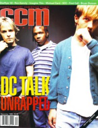

CMnexus
: Contemporary Christian culture, music, and media.
|
CCMDec 1995, vol. 18, iss. 6
| Cover |
|---|
|  | | Writers in this Issue |
|---|
Akins, Debra
Bonham, Chad
Briner, Bob
Bumgarner, Dave
Ciani, Michael
Donaldson, Devlin
Fischer, John
Granger, Thom
Hafer, Todd
Halverson, Holly
Long, Jim
Rake, Jamie Lee
Randolph-Pitman, Karly
Riddle, Melissa
Rumburg, Gregory J.
Selby, Marykay
Smeby, Mark A
|
Cover Feature:
- "The Rockford Files" by Gregory J. Rumburg
Article:Conversations:In The News:
- "Christian Artists Lend Support to Martell Benefit"
- "She Stays" by Devlin Donaldson
Faces to Watch:
- Third Day by Karly Randolph-Pitman
- "One Love, One Faith" by Debra Akins
What's New:In Concert:
- "New Life Church, Colorado Springs, CO" by Todd Hafer
Consider This:
- "Why A Savior Was Born..." by John Fischer
Roaring Lambs:
- "A Lamb Roars for the 'Beautiful People'" by Bob Briner
|
|